The Mill Hand
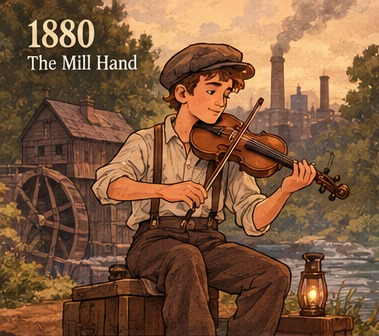
Gas lamps, coal smoke and a twelve-hour shift. Music is something you make yourself: a fiddle on the porch after work, passed down from his father. No recordings exist. If you miss the tune, it is gone forever.
The Parlour Clerk
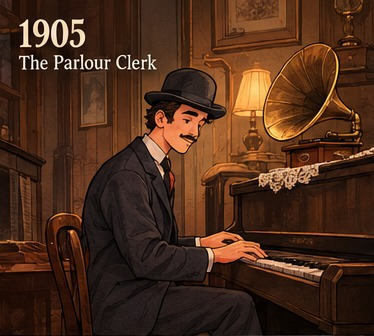
A railway clerk with a bowler hat and a second-hand upright piano. The gramophone arrives, and for the first time he hears a voice from a person who is not in the room.
The Jazz Age Dreamer
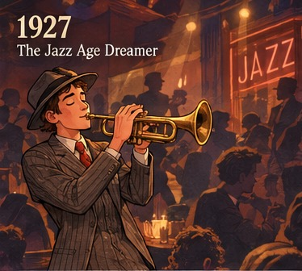
Speakeasies, motorcars and the first talking pictures. He swaps sheet music for improvisation, and the trumpet teaches him that mistakes can become style.
The Radio Crooner
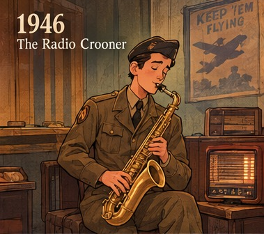
Home from the war, he finds the whole country gathered around a wooden radio. Saxophones and a ribbon microphone turn ordinary men into voices that travel across continents.
The Rock 'n' Roll Kid
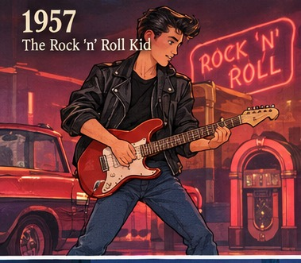
Jukebox glow, a leather jacket and an electric guitar plugged into a small amp. Volume becomes rebellion, and the teenager is invented.
The Synth Pioneer
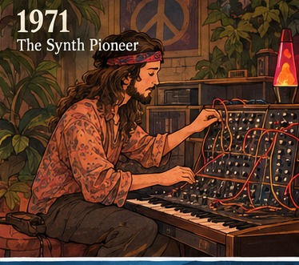
Long hair, vinyl crates and a wall of patch cables. The Moog synthesizer makes sounds that no instrument in history ever produced. Music is now electricity.
The Walkman Commuter
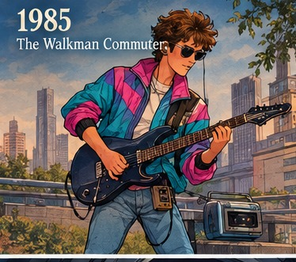
Neon legwarmers, a drum machine and a cassette mixtape. For the first time he carries his own soundtrack through the city, and the streets feel like a film.
The Dial-up Downloader
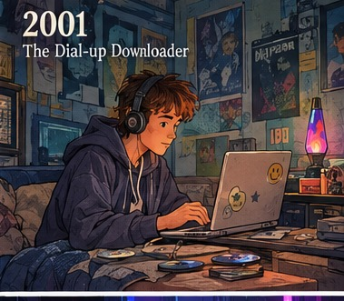
A beige PC, burnt CDs and a thousand MP3s of questionable origin. He learns to make beats with cracked software, and a bedroom becomes a studio.
The Streaming Native
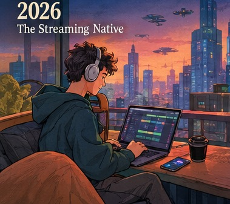
Every song ever recorded fits in his pocket. He produces on a laptop, collaborates with an AI and posts a thirty-second hook for strangers to scroll past.
The Neural Composer
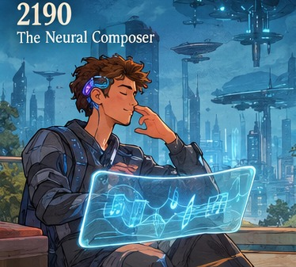
Seawalls, sky farms and a thin implant behind the ear. He thinks a melody and it plays. The instrument is no longer in his hands. It is in his head.
The Orbital Drifter
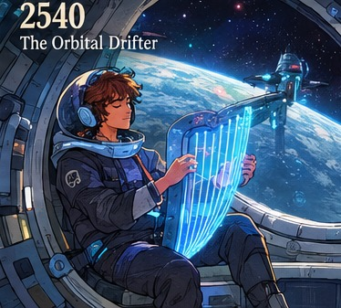
Born on a ring station, he plays the hull itself. Vibrations in zero gravity become strings, and an audience across three planets hears him with a seconds-long delay.
The Neon Citizen
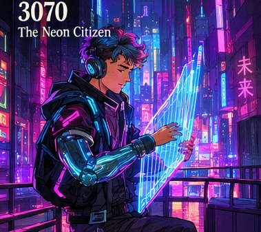
Rain on chrome, holograms in every alley, and a cybernetic arm that doubles as a light-harp. He is an average man in a city of ten billion, and somewhere in his code is still a tune his great-great-grandfather played on a fiddle.